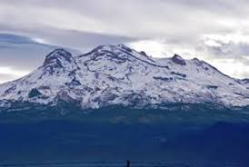
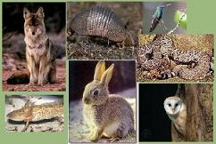

La mayor parte se localiza en la parte central del Eje Neovolcánico. Comprende los valles de México, Toluca, parte del valle de Puebla-Tlaxcala y una pequeña porción del Valle del Mezquital al norte del estado que antiguamente se conocía como la Teotlalpan, así como las cadenas montañosas Sierra Nevada, Monte de las Cruces, Sierra de Monte Alto, Sierra de Tetzontlalpan al norte y Cumbres Occidentales en colindancia con Michoacán. Sobre esta misma meseta se localizan importantes elevaciones como el volcán Popocatépetl (5500 m), el Iztaccíhuatl (5220 m), el Nevado de Toluca (4680 m) y los cerros Tláloc (4120 m), Telapón (4060 m) y Jocotitlán (3910 m). La parte sur del territorio mexiquense se localiza dentro de la depresión del Balsas, misma que comparte con los estados de Guerrero, Michoacán, Puebla y Morelos.
La biodiversidad en el estado de México es muy variada ya que al estar en el centro del país, cuenta con características heterogéneas de clima, orografía e hidrografía que permiten el desarrollo de múltiples formas de vida que resultan útiles para las actividades humanas y esenciales para el mantenimiento del equilibrio ecológico, en ese sentido es importante internarse en el conocimiento de esta biodiversidad para contextualizar y valorar el papel que desempeña en el desarrollo estatal. A pesar de que en el estado se encuentran algunos zoológicos, existen pocos espacios en donde se puedan observar, conocer y aprender sobre la fauna y flora originaria del estado, resaltan en este sentido un par de sitios: El jardín Botánico del cosmovitral en Toluca, que si bien resguarda flora de muchos lugares, se le da énfasis a la flora Mexiquense y también el Museo vivo de Los Bichos de Malinalco, ubicado en ese municipio (Malinalco) en donde se muestra de manera lúdica e interesante la flora y fauna de la región sobre todo sur del estado, sin lugar a dudas son sitios que vale la pena visitar.
